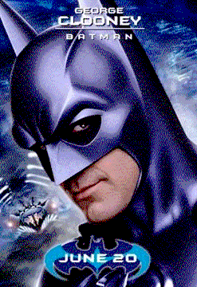
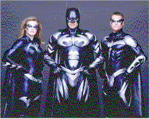
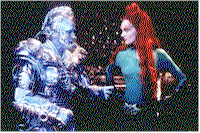
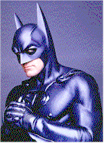
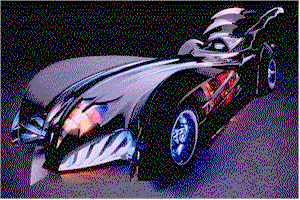

Contents | Features | Reviews | News | Archives | Store |
 |
|
| Movie Credits | Buy It! |
Batman & Robin
Review by Eddie Cockrell
Posted 20 June 1997
|  |
|
Directed by Joel Schumacher Starring Arnold Schwarzenegger, Screenplay by Akiva Goldsman |
"Remember, everyone, this is a cartoon," actor John Glover recalls director Joel Schumacher exhorting his troops prior to key takes for Batman & Robin, the fourth installment in the tremendously successful Warner Bros. franchise of films (and, of course, related merchandise) based on the famed, angst-ridden Caped Crusader and his dedication to the protection of the perpetually endangered Gotham City. That Schumacher and the studio brain trust have a very firm idea what the Batman juggernaut should be was resoundingly reaffirmed by the canny instincts of the enjoyably trashy Batman Forever (1995), which jettisoned once and apparently for all the mopey but provocative original vision of Tim Burton (1989's Batman, 1992's Batman Returns) in favor of a labyrinthine neon netherworld and a more familial approach to the material. Yet as the formula becomes inevitably more predictable -- and thus, by definition, more closely aligned to the spirit of childhood days spent idly flipping through lurid twelve-cent sagas which offered simple moral dilemmas and convenient, action-based solutions -- the opportunity to remake this venerable superhero for these jittery pre-millennium times seems to be slipping away. Individual reaction to this conscious decision will ultimately dictate the degree to which the average moviegoer enjoys this effects-laden extravaganza.
After agreeing to work together to protect Gotham at the end of Batman Forever, Bruce Wayne/Batman (George Clooney, replacing Val Kilmer) and Dick Grayson/Robin (Chris O'Donnell) must now maintain their increasingly uneasy truce in the face of threats by the diabolical Victor Fries/Mr. Freeze (Arnold Schwarzenegger), who in turn pursues an uneasy criminal alliance with Pamela Isley/Poison Ivy (Uma Thurman), an earnest environmentalist transformed into a deadly femme fatale by the machinations of her bushy boss (Glover). She achieves her goals of clouding men's minds with the help of the grotesquely muscled Bane (Jeep Swenson), the bizarre product of an experiment gone awry. Balancing the evil on hand is Barbara Wilson/Batgirl (Alicia Silverstone), who arrives unannounced from her studies at "Oxbridge" to find her uncle Alfred Pennyworth (Michael Gough) slowly succumbing to a mysterious illness. The drama plays itself out through non-stop action set-pieces that melt into one another with only perfunctory stops for narrative.
As is the norm in the comic book universe, each of the new characters has an extensive backstory: Freeze is a tragically deformed scientist imprisoned in a glowing cryosuit who now splits his time between mourning his wife's tragic fate (she's floating in a large jar until he can find a cure for her "McGregor's Syndrome") and scheming to destroy the city; Ivy, with blood of aloe and skin of chlorophyll, also packs a poisonous kiss and seems to want revenge on those who befoul the planet and untrustworthy men in general; and Bane... well, although given the niftiest creation sequence in the film, much of the history of this creature, who looks like a Mexican wrestler, is left unexplored -- although there are ancillary comic books that apparently flesh this out in some detail.
The film trusts the audience to remember why the title characters do what they do, and even fetishizes the essential absurdity of the superhero costume thing with a opening credit sequence montage that emphasizes the sections of anatomy teenaged girls buy tickets to see (the boys get equal time later in the movie when Batgirl first suits up). This emphasis on raging hormones at the expense of Burton's exploration of the macabre (remember the yucky black saliva of Danny DeVito's Penguin?) is still relatively new, having been introduced by Schumacher in the previous film and refined here to embrace a good-natured competition between Robin and Batgirl as well as the former's undisguised lust for both his partner in crime-fighting and Poison Ivy, who promises and delivers him his own bat signal in exchange for a lethal lip lock.
All of this is presented in the dazzling, vertiginous style that marks Schumacher as a reverent emulator of a true comic book. Regrettably, the murky metropolis that is Gotham City, not to mention the cavernous, pitch-black Wayne Manor and barely-glimpsed Batcave, bear no spatial relationship to each other and thus exist as the kind of freeze-frames that make for exciting comic books but disorienting and disjointed movies. Schumacher helps himself not a bit by jettisoning such mainstays of the television show as Commissioner Gordon's office (although venerable character actor Pat Hingle is back for a fourth turn as the blustery cop), the space between Wayne Manor (hard to say without "Stately" in front of it...) and the Batcave, which is reduced to not much more than a fog-filled garage for the once-again retooled but underexplored Batmobile. There's a new emphasis on gadgets, with lasers, the inevitable outlandish guns and a sort of Bat-weed-whacker taking center stage. Having said this, Barbara Ling's dense production design looks to be terrific, but apparently the desired effect was to make it impossible to see anything well enough or long enough for details to register. Mission accomplished.
The thinly-veiled messages of trust, family values and good citizenship embodied by the heroes (and heroine) of Batman & Robin are tempered with the increasingly frantic style of the film as well as its easily digestible storyline and largely inoffensive plot points. The script, credited to Akiva Goldsman but apparently shored up by Oscar-winning writer Christopher McQuarrie (The Usual Suspects), distills word balloon bon mots to their essential form, moving the story forward with exclamations such as "The Iceman cometh!," "your supreme ruthlessness," "I heard you were blue," "Tonight hell freezes over!," and the inevitable "Let's kick some ice!"
Clooney's Batman, while more human than Kilmer's or Keaton's (much is made of his ability to actually smile), is still a direct offshoot of his Doug Ross of E.R., which is to say he’s an unstable mixture of soulful compassion and fierce ideals. That he doesn't do that neck thing all the time is less a function of his characterization than it is a restriction of the rubber suit, which keeps his head relatively straight. O'Donnell continues his earnest read of Robin's gee-whiz enthusiasm in the best Burt Ward tradition, tempered by a twentysomething penchant for extreme games and adolescent emotions. Silverstone's Batgirl is mannered yet refreshing in her plainness, while Thurman seems to be having a ball vamping it up as the malevolent Poison Ivy. The top-billed Schwarzenegger, who delivers such lines as "for dey are harbingers of yohr duhme" and "your heart will freeze and beat no moah" with gusto but little conviction, nevertheless summons some unexpected pathos and gets a good jab at Steven Spielberg's competing summer blockbuster. Supermodels Elle Macpherson (as Bruce Wayne's long-suffering significant other Julie Madison) and the floating Vendela are largely decorative, and blinking will rob the viewer sights of Vivica Fox and Coolio.
Where does the franchise go from here? Up, apparently. At this writing a popular scenario making the rounds of gossip columns tells of Tim Burton directing Nicolas Cage as Superman in a big-budget action film that may or may not feature Jim Carrey as Brainiac and, in a walk-on cameo, Michael Keaton as Batman. Whether the competition between the two is antagonistic or synergistic remains to be seen, fuelled no doubt by the degree of success this film exhibits; remember, Burton's Mars Attacks! was a poorly-timed oddity and the director, fleetingly referred to in Batman Forever (the "Dr. Burton" at the wisely-reprieved Arkham Asylum) and listed as an executive producer, doesn't appear to have been involved in Batman & Robin.
"If you think it, you can do it," Schumacher told a journalist earlier this year, "But you've got to build something fantastic." Batman & Robin is fantastic, if not particularly inspired, and seems sure to be a hit for the very reasons that may disenchant many moviegoers. Undoubtedly a logistical triumph for everyone involved, the franchise will nevertheless forever be limited by its broad appeal, and those offshoots stemming from that appeal: namely, self-replication and mass merchandising. The challenge is to balance the already-rampant self-parody with genuine surprise (they're using up the good villains at an alarming rate). But as calculating as the entire phenomenon may seem, on the strength of its distinctive special effects and short-attention-span aesthetic, the film itself is fervently faithful to the teenaged diversions that inspired it. There are numerous good reasons, lavishly evident here, why the next installment has already been titled Batman Triumphant.
Contents | Features | Reviews | News | Archives | Store
Copyright © 1999 by Nitrate Productions, Inc. All Rights Reserved.